Servlet API
Java Server Pages (JSP)
Часть 1
© 2014 Sergey KraucheniaHello, World Servlet
Цель - страничка hello-world, которую будет "отдавать" сервер
1. Servlet container
- Скачать
- Распаковать куда угодно. Далее TOMCAT_DIR
2. Создаем структуру проекта
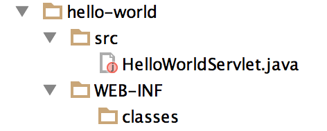3. HelloWorldServlet.java
import javax.servlet.annotation.WebServlet;
import javax.servlet.*;
import javax.servlet.http.*;
import java.io.IOException;
@WebServlet(name = "helloWorld", urlPatterns = {"/hi"})
public class HelloWorldServlet extends HttpServlet {
@Override
protected void doGet(HttpServletRequest req, HttpServletResponse resp) throws ServletException, IOException {
resp.getWriter().write("<h1>Hello, world!</h1>");
}
}
4. Компилируем код
Запускаем из директории проекта hello-world
>javac -classpath TOMCAT_DIR/lib/servlet-api.jar -d WEB-INF/classes src/HelloWorldServlet.java
5. Deployment и запуск
- Копируем папку hello-world в TOMCAT_DIR/webapps/
- Запускаем томкат
>TOMCAT_DIR/bin/startup.sh
6. Проверяем
Набираем в адресной строке браузера адрес сервлета и ожидаем ответ в виде страницы
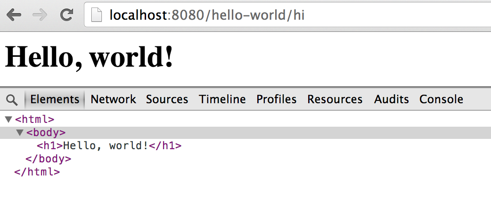Адрес сервлета
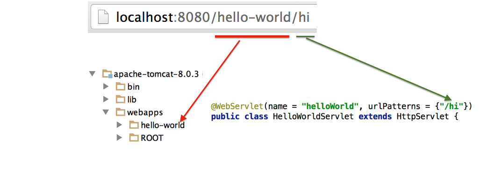Servlet Container
Что делает контейнер сервлетов?
- Создает сервлеты
- Ищет нужный сервлет для обработки запроса
- Оборачивает Http-запрос/ответ в удобные объекты HttpServletRequest/HttpServletResponse
- Вызывает метод сервлета и передает туда соответствующие объекты запроса/ответа
- Управляет жизненным циклом сервлета
- И т.д.
Как выглядит процесс обработки запроса (1/6)
Пользователь отправляет запрос на URL сервлета
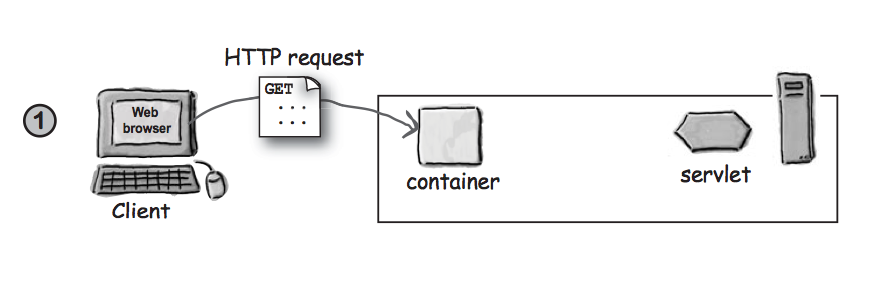Как выглядит процесс обработки запроса (2/6)
Контейнер создает 2 объекта HttpServletRequest и HttpServletResponse
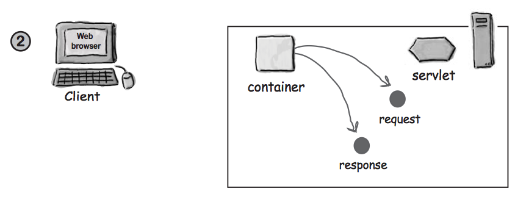Как выглядит процесс обработки запроса (3/6)
Контейнер находит нужный сервлет по URL-у запроса, создает или выделяет thread для запроса и передает в него объекты запроса и ответа
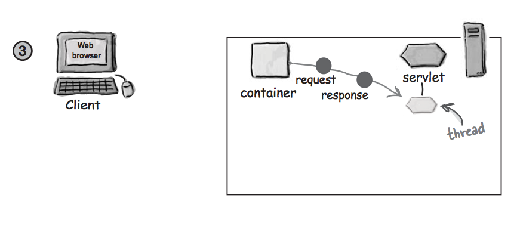Как выглядит процесс обработки запроса (4/6)
Контейнер вызывает метод service(), который в зависимости от метода запроса вызывает нужный метод, например doGet
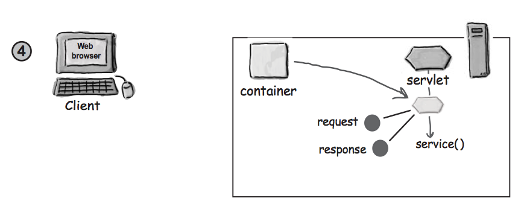Как выглядит процесс обработки запроса (5/6)
doGet метод генерирует код страницы и делает его частью ответа

Как выглядит процесс обработки запроса (6/6)
Контейнер конвертирует объект HttpServletResponse в HTTP-ответ и отдает клиенту. Удаляет объекты запроса и ответа
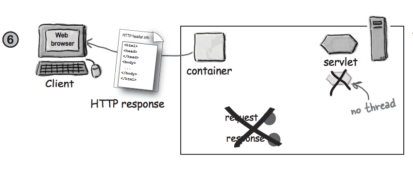Integrated development environment (IDE)
Мы рекомендуем Intellij IDEA в качестве среды разработки
Можно скачать Отсюда
IDE избавит от рутинной процедуры сборки и деплоя приложения, поможет ускорить разработку, облегчит процесс дебага
Как создать Web-проект в IDEA (1/4)
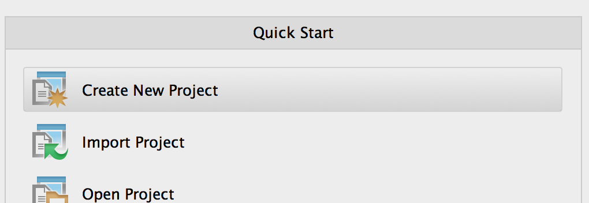Как создать Web-проект в IDEA (2/4)
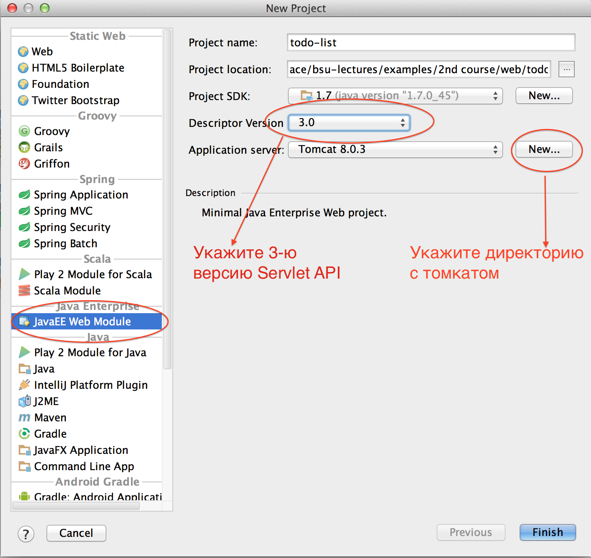Как создать Web-проект в IDEA (3/4)
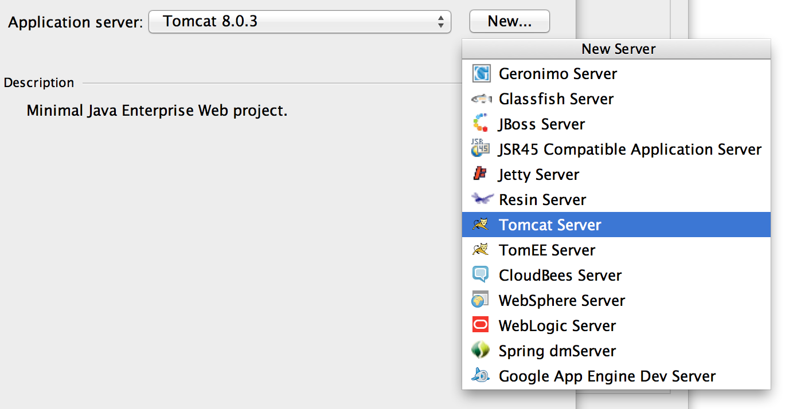 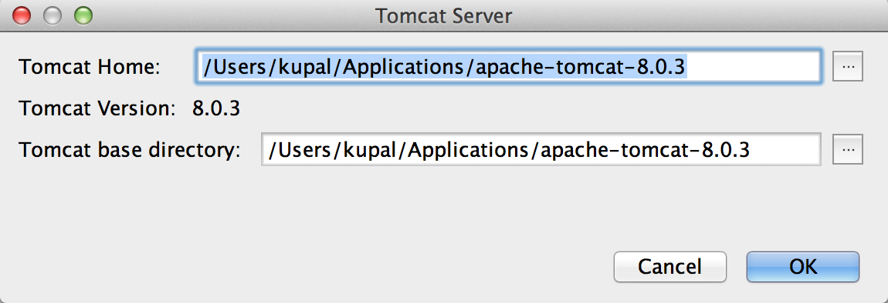Как создать Web-проект в IDEA (4/4)
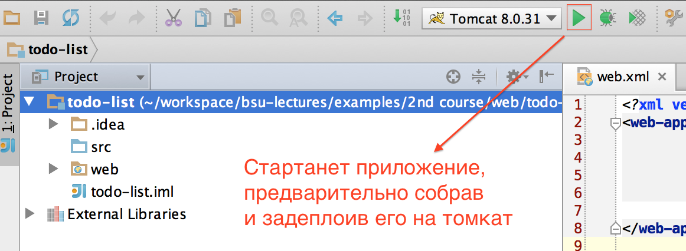Как можно отправить данные на сервер?
С помощью формы
<form method="post" action="send-data">
<input name="fullName" placeholder="Name"/>
<input name="age" placeholder="Age">
<input type="submit" value="Submit">
</form>
Как такие данные можно обработать на сервере?
@WebServlet(name = "submitForm", urlPatterns = {"/send-data"})
public class SubmitFormServlet extends HttpServlet {
@Override
protected void doPost(HttpServletRequest req, HttpServletResponse resp) throws ServletException, IOException {
String name = req.getParameter("fullName");
Integer age = Integer.parseInt(req.getParameter("age"));
}
}
Как еще можно отправить данные на сервер?
Как часть URL-a GET-запроса
- http://localhost:8080/send-data?fullName=Pushkin&age=37
- Параметры указываются после знака вопроса в формате paramName=paramValue. Если параметров несколько, они разделяются амперсандом (&)
- Такой запрос обрабатывает так же как и предыдущий, но так как это GET-запрос, обработка описывается в методе doGet
Model-View-Controller (MVC)
Основная цель применения – отделить логику от представления- Model - данные и методы для работы с ними, бизнес логика
- View - отвечает за отображение информации, работает с контроллером
- Controller - обеспечивает связь между пользователем и системой (ввод данных пользователем и навигация, использует модель и представление)

Преимущества MVC
- К одной Model можно присоединить разные View Пример: данные могут быть представлены в виде HTML страницы для браузера или PDF отчёта
- Одни и те же Model и View могут быть использованны разными Controller упрощается создание страниц с похожей функциональностью
- Разделение труда разработчиков – Model и View часто могут разрабатываться независимо.
Задание
- Создать web-проект
- Реализовать необходимые классы сервлетов и обеспечить переходы между страницами
- Из уже свёрстаных html-страниц сделать jsp-страницы. Показывать на них динамический контент - список пользователей, редактирование пользователя и т.д.
- Реализовать слой приложения, который занимается сохранением данных (на данном этапе в памяти)